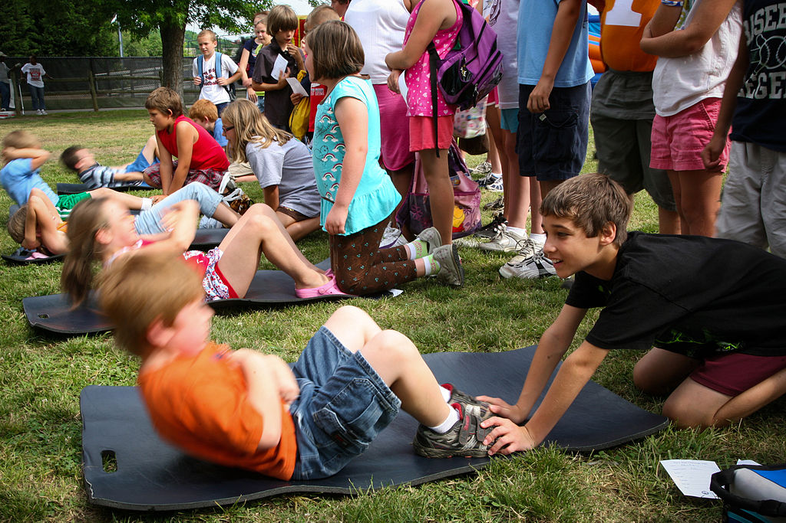

Calisthenics (American English) or callisthenics (Commonwealth English) are exercises consisting of a variety of gross motor movements—running, standing, grasping, pushing, etc. — often performed rhythmically and with minimal equipment, so essentially, bodyweight exercises. They are intended to increase body strength, body fitness, and flexibility, through movements such as pulling or pushing oneself up, bending, jumping, or swinging, using only one's body weight for resistance; usually conducted in concert with stretches. When performed vigorously and with variety, calisthenics can provide the benefits of muscular and aerobic conditioning, in addition to improving psychomotor skills such as balance, agility and coordination. Many consider calisthenics as "movement through space", meaning you can move freely without any restriction blocking your full strength.
Push-ups are a basic exercise used in civilian athletic training or physical education and commonly in military physical training. They are also a common form of punishment used in the military, school sport, or in some martial arts disciplines